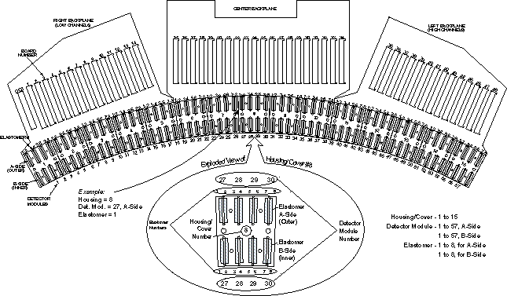
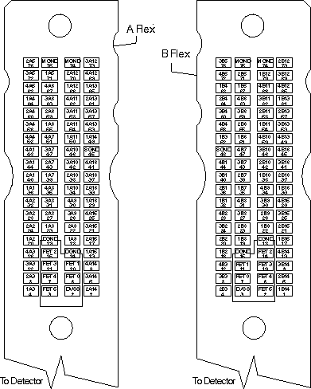
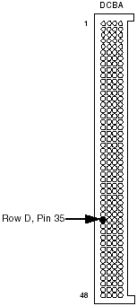

Proprietary to General Electric
Direction 5193755-800, Rev# 8
BrightSpeed (Ltd. Access) Service Methods - Adv
Proprietary to General Electric |
If x-ray verification fails Channel 355, on Row 2A with 0 counts of offset corrected scan data, the following information must be known to continue:
Row Information - which row(s) failed (4A, 3A, 2A, 1A, 1B, 2B, 3B or 4B)?
Scan Data Channel or DAS Channel number.
From this information, Use DAS/Detector Architecture Tool to find more information about the failing channel. By looking up Row 2A, DAS Channel 355, the following information is displayed:
| Detector Row: | 2A |
| Scan Data Ch. No.: | 355 |
| Converter Board No.: | 23 |
| Converter Ch. No.: | 67 |
| Detector Ch. No.: | 419 |
| Detector Module: | 27 |
| Module Pin No.: | 8 |
| Housing #: | 8-Outer |
| Elastomer: | 1 |
Measure the resistance from the converter backplane pin to flex pads of the failing DAS channel, for open or short.
Converter Board #: This corresponds to the slot location of the suspected converter board.
Converter Board Channel #: There are 128 channels per Converter board. This value gives the channel number relative to the converter board.
Detector Channel #: There are 912 Detector channels. Some of these channels are double, tripled, and even quadruple ganged on the DAS backplane to map to a single DAS channel. The channels used for image reconstruction are DAS channels, NOT Detector channels.
Detector Module: There are 57 Detector modules within a full LightSpeed Detector. Each module is divided up into 2 sides, the A and B sides. Each side has 16 channels which is then broken up into four (4) output rows for channel (Row 4A, 3A, 2A & 1A for the “A” side, and 1B, 2B, 3B and 4B for the “B” side). Therefore, a Detector Module has eight (8) rows of data with each row having 16 Detector channels.
Module Pin #: This is the actual pin or pad number of the Detector flex that matches the pad on the DAS backplane. Refer to Illustration 2.
Housing #: This is the number associated with the housing when the DAS is at approximately 90 degrees position, housing 1 is at the top, and housing 15 is at the bottom. The housing numbers are also associated with the A or B side of the Detector. “A” is also referred to as the “Outer” and “B” as the “Inner”. Refer to Illustration 1, for the Detector / DAS Hardware Architecture Map.
Elastomer #: The elastomers are also given numbers. In each housing there are 8 twin elastomers. With the DAS approximately in the 12 o’clock position, when viewing a housing, elastomers are numbered 1 at the left, and 8 at the right. Refer to Illustration 1, for the Detector / DAS Hardware Architecture Map.
| NOTE: | For a scalable, full size version of this illustration, click on the PDF icon below. |
Media File 1: Full Size Illustration: Detector/DAS Hardware Architecture Map

Illustration 1: Detector/DAS Hardware Architecture Map

| NOTE: | For a scalable, full size version of this illustration, click on the PDF icon below. |
Media File 2: Full Size Illustration: Flex Pin Connections (DAS at 12 o’clock)

Illustration 2: Flex Pin Connections (DAS at 12 o’clock)

Table 1: Converter Board Connector Pin Assignments
| ROW PIN NO. | COL A SIGNAL NAME | COL B SIGNAL NAME | COL C SIGNAL NAME | COL D SIGNAL NAME |
|---|---|---|---|---|
| 1 | LGND | +5V_L | LGND | +5V_L |
| 2 | LGND | D_OUT_OD- | CVB_ADDR_5 | D_OUT_EVN- |
| 3 | D_IN_OD- | D_OUT_OD+ | D_IN_EVN- | D_OUT_EVN+ |
| 4 | D_IN_OD+ | CV_RST | D-IN_EVN+ | LGND |
| 5 | LGND | CV_FLT* | CVB_ADDR_4 | X_PRG* |
| 6 | S_TRIG- | +5V_L | CAN_LO | CAN_HI |
| 7 | S_TRIG+ | LGND | CVB_ADDR_3 | LGND |
| 8 | LGND | SH_CK- | LGND | CVB_ADDR_2 |
| 9 | LGND | SH_CK+ | LGND | CVB_ADDR_1 |
| 10 | WT_PRTCT | LGND | CVB_ADDR_0 | AGND |
| 11 | +5V_A | AGND | -5V_A | TEST_V- |
| 12 | +5V_A | AGND | -5V_A | TEST_V+ |
| 13 | AGND | AGNE | AGND | SGND |
| 14 | CHAN112 | CHAN108 | CHAN104 | CHAN100 |
| 15 | CHAN128 | CHAN124 | CHAN120 | CHAN116 |
| 16 | CHAN110 | CHAN106 | CHAN102 | CHAN98 |
| 17 | CHAN126 | CHAN122 | CHAN118 | CHAN114 |
| 18 | CHAN80 | CHAN76 | CHAN72 | CHAN68 |
| 19 | CHAN96 | CAHN92 | CHAN88 | CHAN84 |
| 20 | CHAN78 | CHAN74 | CHAN70 | CHAN66 |
| 21 | CHAN94 | CHAN90 | CHAN86 | CHAN82 |
| 22 | CHAN48 | CHAN44 | CHAN40 | CHAN36 |
| 23 | CHAN64 | CHAN60 | CHAN56 | CHAN52 |
| 24 | CHAN46 | CHAN42 | CHAN38 | CHAN34 |
| 25 | CHAN62 | CHAN58 | CHAN54 | CHAN50 |
| 26 | CHAN16 | CHAN12 | CHAN8 | CHAN4 |
| 27 | CHAN32 | CHAN28 | CHAN24 | CHAN20 |
| 28 | CHAN14 | CHAN10 | CHAN6 | CHAN2 |
| 29 | CHAN30 | CHAN26 | CHAN22 | CHAN18 |
| 30 | AGND | AGND | AGND | SGND |
| 31 | CHAN111 | CHAN107 | CHAN103 | CHAN99 |
| 32 | CHAN127 | CHAN123 | CHAN119 | CHAN115 |
| 33 | CHAN109 | CHAN105 | CHAN101 | CHAN97 |
| 34 | CHAN125 | CHAN121 | CHAN117 | CHAN113 |
| 35 | CHAN79 | CHAN75 | CHAN71 | CHAN67 << |
| 36 | CHAN95 | CHAN91 | CHAN87 | CHAN83 |
| 37 | CHAN77 | CHAN73 | CHAN69 | CHAN65 |
| 38 | CHAN93 | CHAN89 | CHAN85 | CHAN81 |
| 39 | CHAN47 | CHAN43 | CHAN39 | CHAN35 |
| 40 | CHAN63 | CHAN59 | CHAN55 | CHAN51 |
| 41 | CHAN45 | CHAN41 | CHAN37 | CHAN33 |
| 42 | CHAN61 | CHAN57 | CHAN53 | CHAN49 |
| 43 | CHAN15 | CHAN11 | CHAN7 | CHAN3 |
| 44 | CHAN31 | CHAN27 | CHAN23 | CHAN19 |
| 45 | CHAN13 | CHAN9 | CHAN5 | CHAN1 |
| 46 | CHAN29 | CHAN25 | CHAN21 | CHAN17 |
| 47 | AGND | AGND | AGND | SGND |
| 48 | -12V_A | -12V_A | +12V_A | +12V_A |
Illustration 3: Converter board backplane connector (DAS at 12 o’clock)

Make sure Axial Switch is OFF, and lock the gantry, using the rotational lock.
Turn OFF DAS Power and verify.
Using ESD Precautions, remove Detector Flex based on the information given in the DAS-Detector Architecture map. In the example, the Flex would be on Housing #8 Outer since it's on the 2A Row.
The actual flex that needs to be removed is known by elastomer number. Elastomer 1 is under the top most flex on housing # 8. It is also confirmed by knowing the Detector Module number, Module #27.
Place a ESD Detector Boot over the floating flex.
Remove enough converter boards around the slot number that your interested in to gain easy access to the backplane connector. Place the boards in an anti-static bag, and keep in the same order as removed. The example shows board (slot) 23.
Using a DVM, measure the resistance between the Pad (Pad 8) on the backplane with the flex removed (Do NOT measure the pad on the Flex) and the Converter board connector pin number (Connector Row D, pin 35-see Table 1 and Illustration 3). A small needle might be needed to fit within the connector. Do NOT damage backplane connector OR scrape or dent pad on backplane.
The resistance should be less than 1 ohm. If it's infinity, then there is an open on the backplane run. Double check and confirm before ordering a new chassis/backplane.
Measure the resistance between the channel number in the connector to ground to make sure there isn't a short to ground.
Measure the resistance from failing channel number to adjacent pins to check for shorts between channels. CAUTION: Double, triple, and quad detector channels are ganged on the DAS backplane; it's important to know which channels are ganged. Use the DAS/Detector Architecture map tool in either DASTools or Scan Analysis.